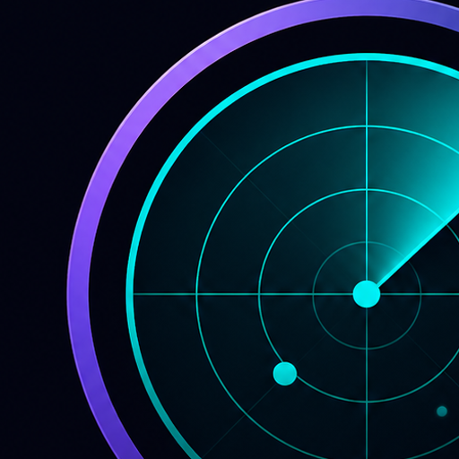
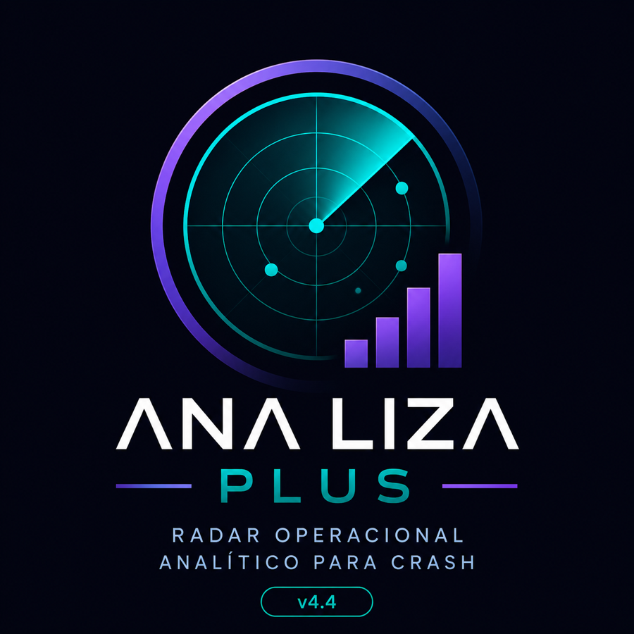

Coleta
Histórico e comportamento recente organizados em tempo real.

ANA LIZA CRASH RADAR Solicitar acessoO Ana Liza Crash organiza histórico, padrões, score e proteção operacional em uma leitura clara para quem quer tomar decisões com mais critério.
ANA LIZA PLUS / LIVE RADAR

Este bloco já está preparado para receber a apresentação real do Ana Liza Crash com tela do app, leitura do radar e fluxo operacional.
Área reservada para apresentação oficial do app.
A maioria olha apenas para o último resultado. O Ana Liza Crash observa o contexto: sequência, compressão, distância, score, padrões cadastrados, CT e proteção.
O resultado é uma operação visualmente organizada, com menos ruído e mais clareza sobre o momento certo de agir — ou de esperar.
Quero entrar na listaHistórico e comportamento recente organizados em tempo real.
Score, CT, SG, distância e padrões são cruzados no motor.
ICP ajuda a filtrar momentos agressivos e zonas de risco.
O painel apresenta leitura clara para apoiar sua execução.
Varredura visual do contexto com leitura contínua de comportamento.
Classificação objetiva para interpretar força e qualidade do momento.
Camada de segurança para leitura de risco antes da entrada.
Acompanhamento entre eventos fortes e pontos de atenção.
Reconhecimento e cadastro de padrões operacionais personalizados.
Registro de SG, gales, ciclos, wins, losses e assertividade.
Indicador de comunicação para destacar a proposta de leitura operacional. Ajuste conforme a base real validada.
Receba informações sobre demonstração, disponibilidade e próximos acessos do Ana Liza Crash.
Uso educacional e analítico. Não há garantia de resultado financeiro.